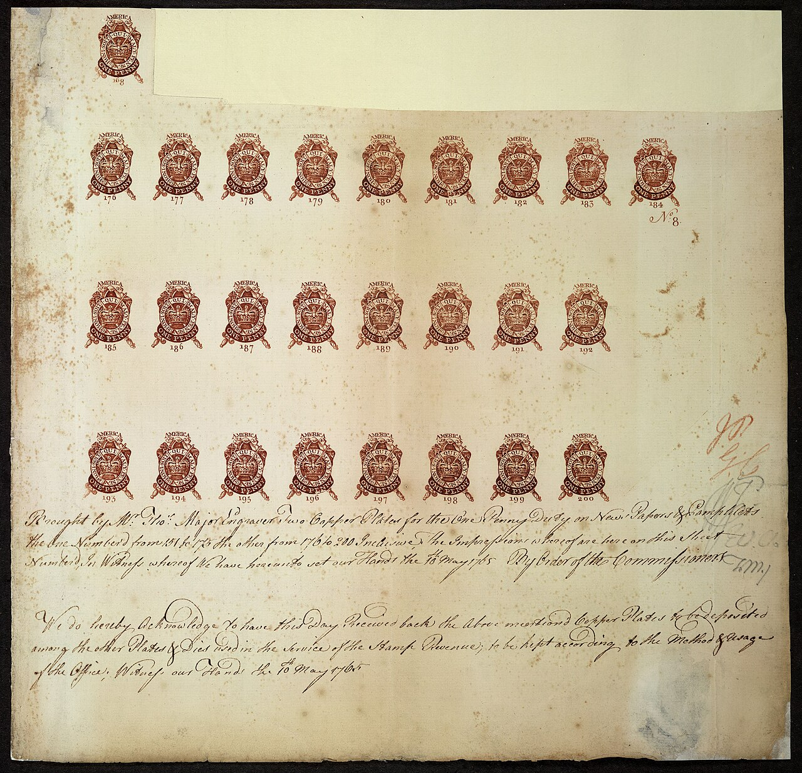

Directions: Fill in the chart as we build the crisis measure by measure. Keep this page in your notebook. You will use it again on the review day before the unit test.

| Piece of the crisis | What it was | Kind: tax, claim, answer, or event | The evidence |
|---|---|---|---|
| The revenue program | |||
| The Stamp Act | |||
| The colonial answer | |||
| Repeal and the Declaratory Act | |||
| The Townshend Acts and Dickinson | |||
| Boston, March 5, 1770 |
The quarrel in one sentence. Finish this sentence in your own words, using at least two rows of the chart as evidence. Repeal in 1766 settled the tax and left the quarrel open because...
| Piece of the crisis | What it was | Kind: tax, claim, answer, or event | The evidence |
|---|---|---|---|
| The revenue program | The Grenville ministry program of 1764 and 1765 to raise money in America for a standing army of some ten thousand soldiers after a war that had nearly doubled the national debt. | Tax | Ministers resolved that the colonies, defended by the victory, should help pay for their own defense. |
| The Stamp Act | The British law of March 1765 that taxed printed paper in the colonies, including newspapers, legal documents, and playing cards, collected through stamps sold by royal distributors. | Tax | Every newspaper, deed, and deck of cards had to carry the stamp and its price. |
| The colonial answer | Argument in the Virginia Resolves and the Stamp Act Congress of nine colonies, combination in merchant boycotts and homespun, and crowd action by the Sons of Liberty that drove every stamp distributor to resign. | Answer | When the act took effect on November 1, 1765, no stamps were sold. |
| Repeal and the Declaratory Act | Parliament repealed the Stamp Act in March 1766 and on the same day passed the Declaratory Act, claiming full power to make laws binding the colonies in all cases whatsoever. | Claim | British merchants hurt by the boycott petitioned for relief, and Franklin testified in February 1766 that the colonies would never submit to the stamp tax. |
| The Townshend Acts and Dickinson | The British laws of 1767 that taxed imports including tea, glass, lead, paint, and paper and paid royal governors and judges from the revenue, answered by Dickinson's argument that a duty laid to levy money is a tax in any form. | Tax | Dickinson called a revenue duty an innovation, and a most dangerous innovation. |
| Boston, March 5, 1770 | The clash in which British soldiers, posted to Boston since 1768, fired into a crowd that had surrounded and taunted them, killing five colonists including Crispus Attucks. | Event | At the trial, two soldiers were convicted of manslaughter and branded on the thumb, and six were acquitted. |
The quarrel in one sentence. Strong answers name the claim that survived repeal. Repeal in 1766 settled the tax and left the quarrel open because the Declaratory Act, passed the same day, claimed for Parliament full power to bind the colonies in all cases whatsoever, and the Townshend Acts of 1767 used that claim to tax again, this time to pay royal governors and judges outside the assemblies' control.